Raphael Zufferey
PI
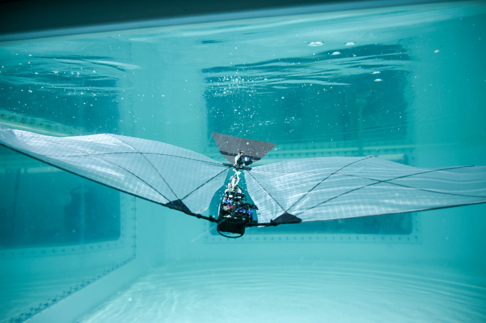
A flapping-wing robot swimming through water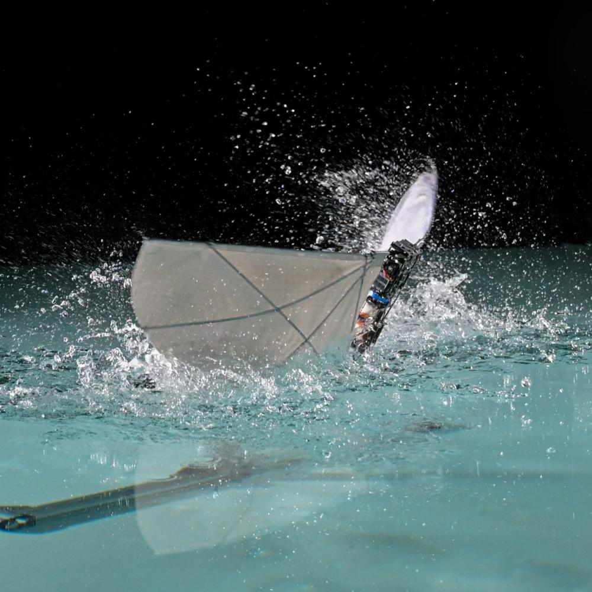
We develop new propulsion methods to enable both flight and underwater locomotion in robots, with a particular focus on transitions & bio-inspiration. We are currently solving challenging transition questions through experimental methods and are studying autonomy, simulation and integration aspects.

The ultimate objective of our robotic systems is to operate in our ocean and waterways without user intervention, and have a positive impact for oceanographers, biologists. To this end, we seek to understand how non-intrusive, small-scale systems can deliver high quality data in a cost-effective manner.
Current projects and future research directions for the lab.
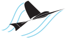
A Flapping-wing Aerial Aquatic Vehiclecapable of both flight and swimming. The first robot of it's kind to successfully transition from water to flight.
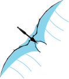
A large-scale flapping wing robot designed to answer questions in both controls and actuation.
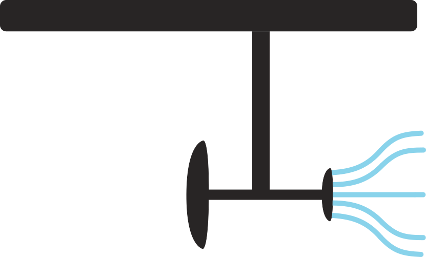
An environmental sampling and monitoring active stabilizing hydrofoil. A highly efficient and low-cost surface vehicle.
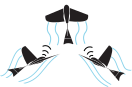
An exploration of swarming of aerial aquatic vehicles for environmental monitoring and ocean exploration.
Highlights of past research projects. List of publication on ORCID and Google Scholar.

Large-scale flapping-wing robots with physical contact capabilities. Perching on a branch has been achieved!

A novel water-reactive fuel thruster for impulsive take-off, allowing multiple jump-gliding from the water surface.

Sailing-Flying locomotion method for long-duration aerial-aquatic missions thanks to wind energy harvesting.

Aquatic escape of a 160 milligram robotic bee using flapping flight, hydrogen combustion and electrolysis.

Grad student
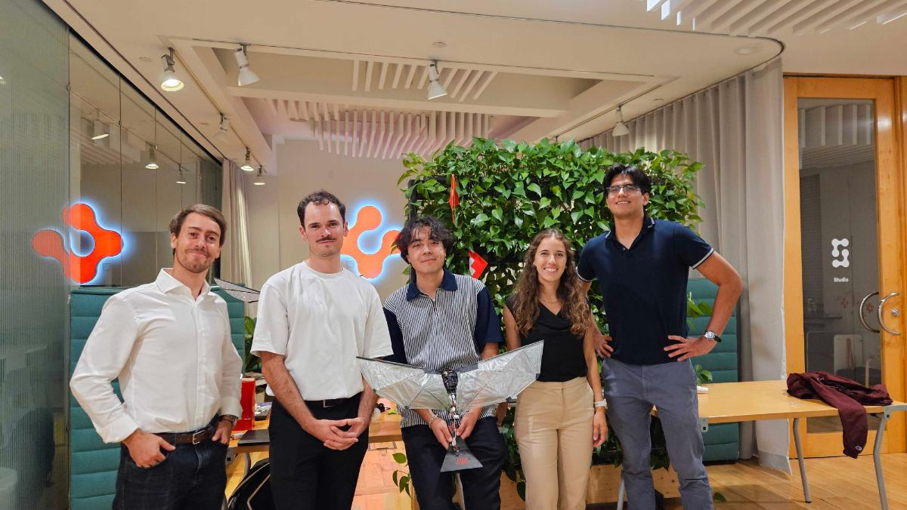
Presenting at Swissnex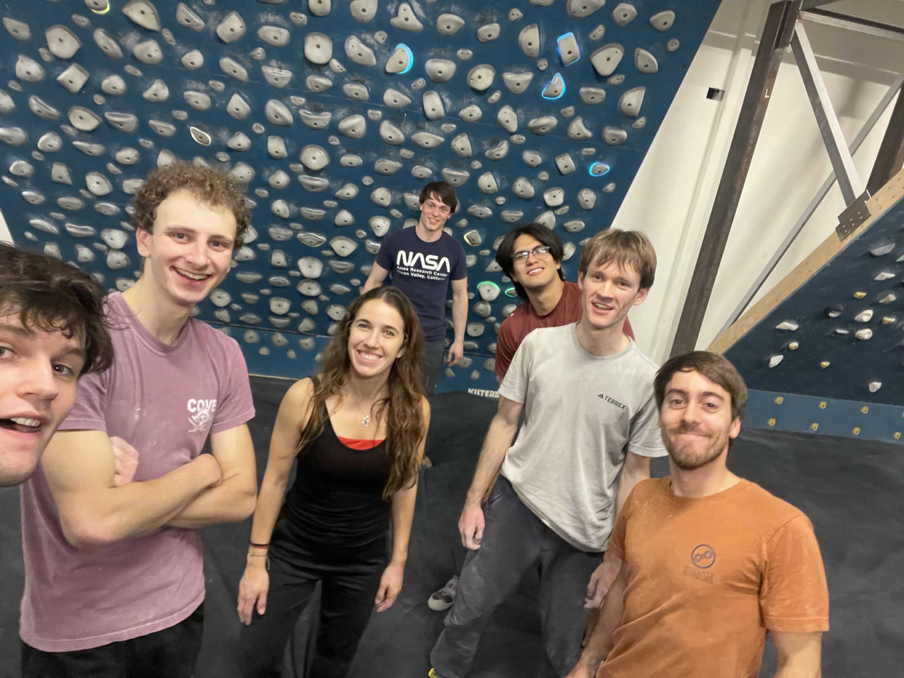
Rock Climbing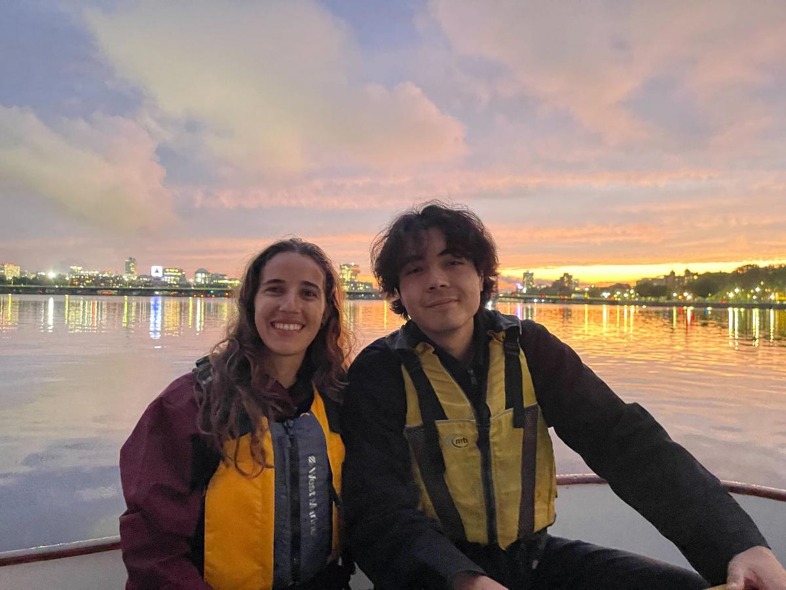
Sailing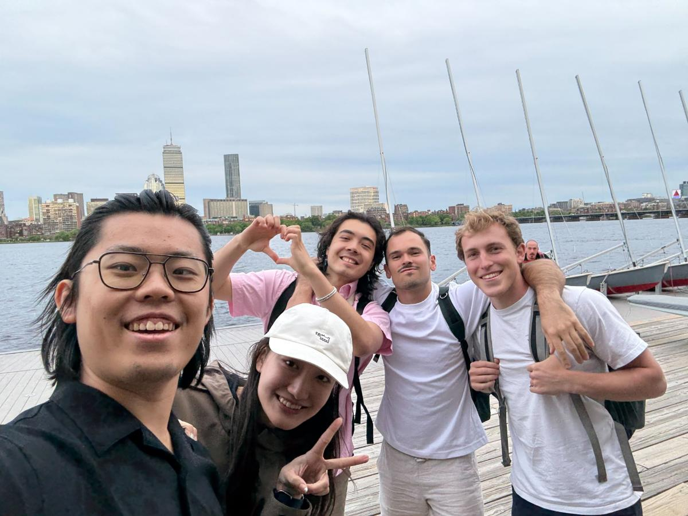
Sailing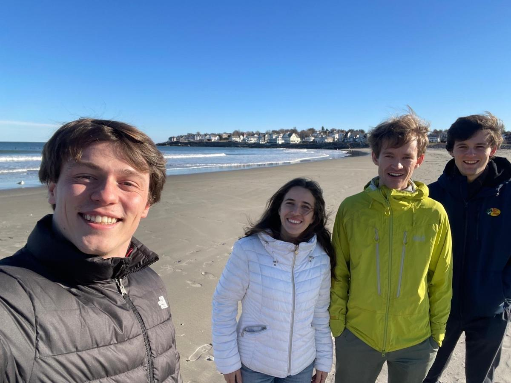
Exploring Maine Beaches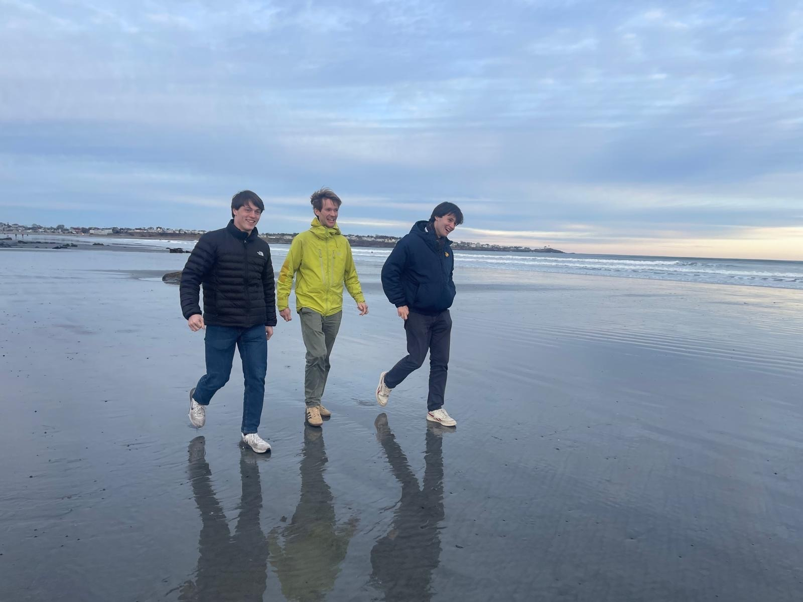
Exploring Maine Beaches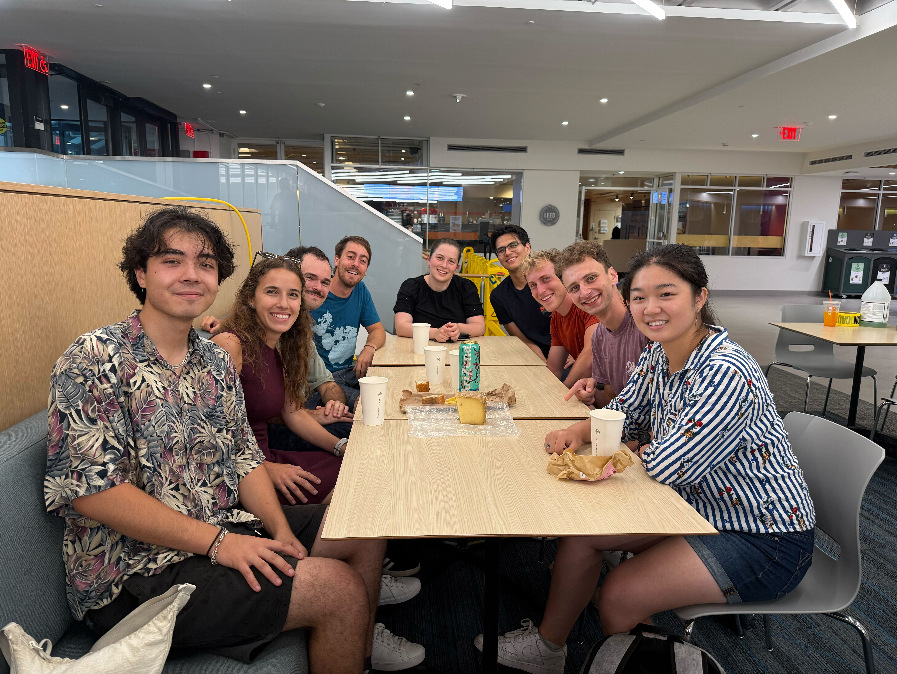
Cheese!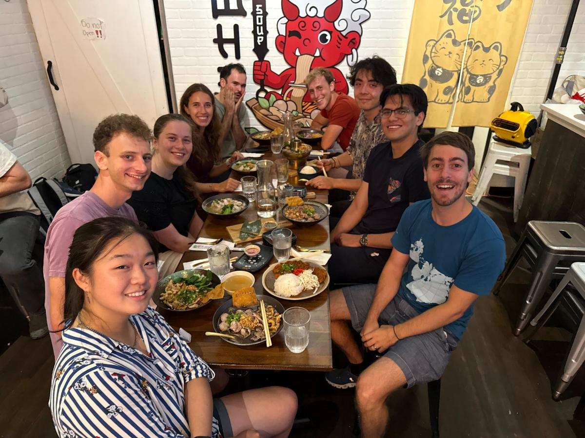
Lab Dinner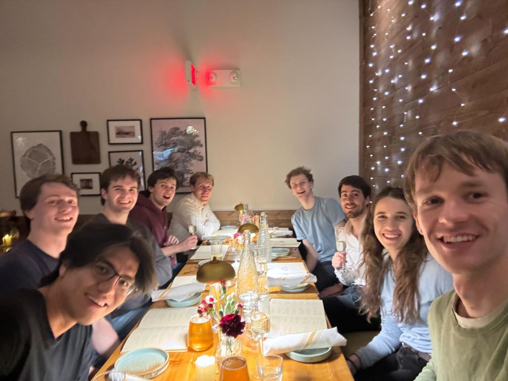
Lab Dinner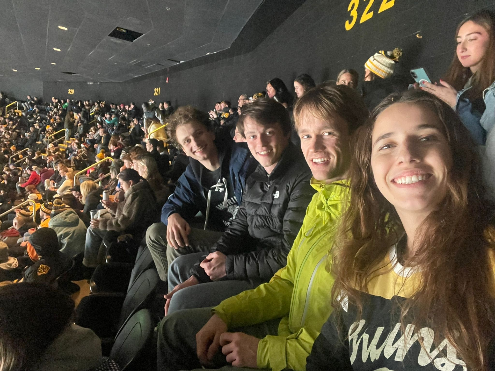
Watching the Bruins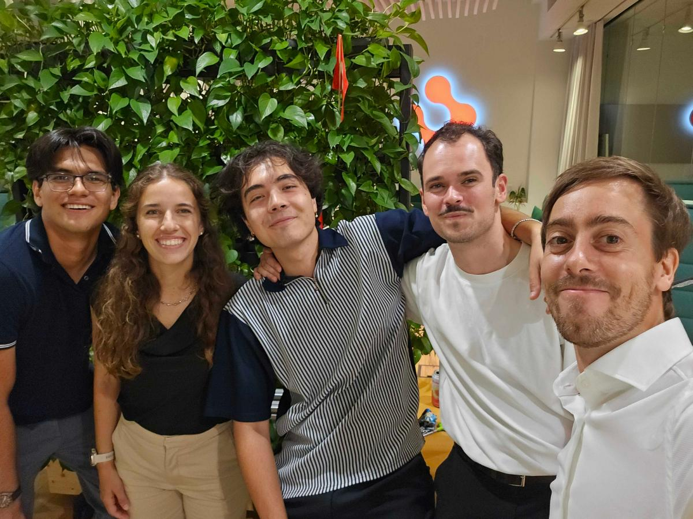
Presenting at Swissnex
I am looking for motivated students that are excited to study and develop the next generation of
hybrid autonomous systems.
To join the lab, you should apply to the Mechanical
Engineering graduate admissions (deadline each
year in December), and mention my name in the application. Please also send me an email with your
CV, and a summary of previous projects or research. I am interested to know why you
would like to join this group and what research aspects you feel most excited about. Use [AURA
Prospective student] Your name in the title.
Note: AI-generated emails paraphrasing the lab's ideas will not get significant attention.